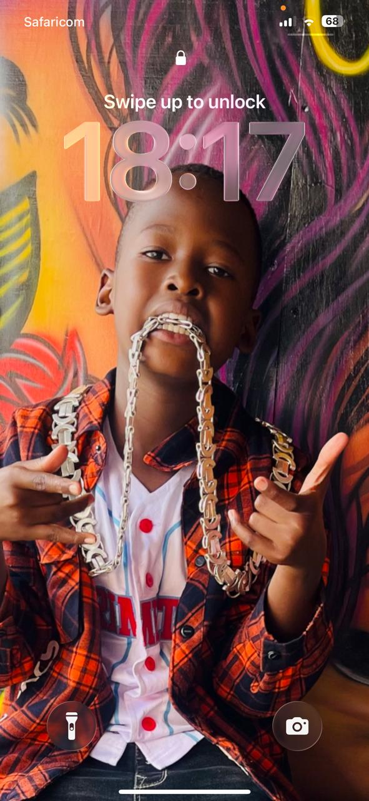
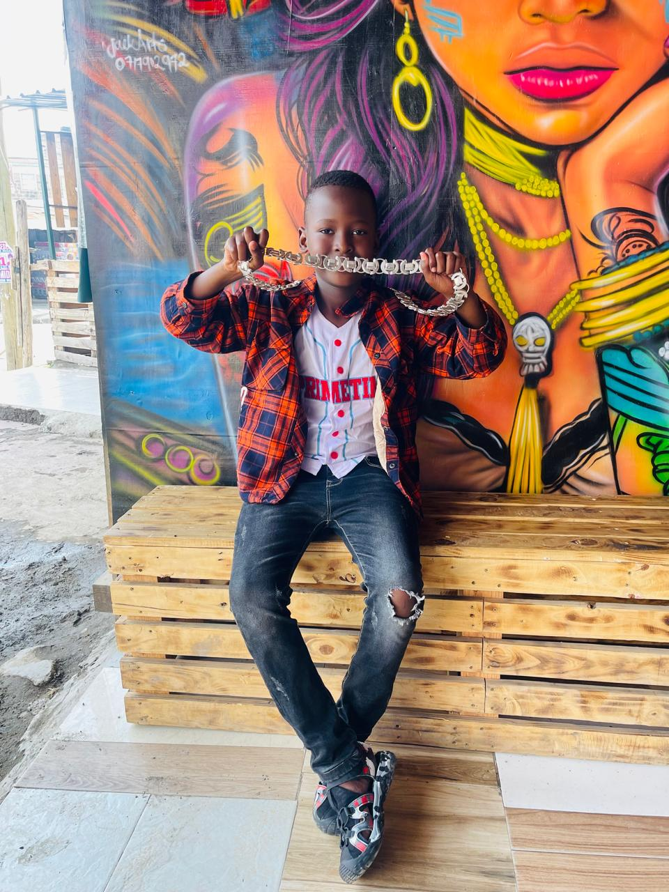

Birthday centerpiece
The color, pose, and setting make this feel like the strongest opening image for the birthday story.
Photo album
A gallery of Liam’s moments, each paired with a short note so the album reads like a memory and not just a row of images.
Album note
Good photos do more than look nice. They hold a feeling. This page keeps that feeling close by mixing simple descriptions with a clean, premium presentation.
The color, pose, and setting make this feel like the strongest opening image for the birthday story.

Relaxed, natural, and confident. The kind of photo that does not need too much explanation to leave an impression.
The look is casual, but the framing gives it a polished edge that lifts the whole album.

Not every strong photo has to be loud. This one works because it feels settled, grounded, and real.
The styling and body language give this shot personality and make it one of those moments people keep coming back to.

A softer and more human moment that balances the sharper photos in the rest of the collection.
What this album holds
Clean looks, strong framing, and a calm visual tone.
Moments that feel genuine enough to revisit long after the day.
A gallery built to reflect Liam rather than just display photos.